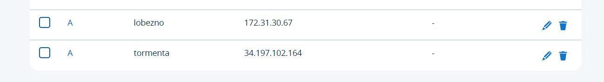

Asignación de IPs elásticas y configuración de DNS
Lo primero que haremos será asignar direcciones IP elásticas a nuestras instancias en AWS.
Accedemos a la consola de AWS y seleccionamos la opción de direcciones IP elásticas. Luego, asignamos una dirección IP a cada una de nuestras instancias.


Una vez asignadas las IPs, nos conectamos a cada una de ellas por SSH y realizamos pruebas de conectividad mediante ping.

A continuación, configuramos las entradas DNS en nuestro dominio gestionado en IONOS. Añadimos dos registros tipo A, asignando cada IP elástica a un subdominio correspondiente.

Finalmente, verificamos que las entradas han sido creadas correctamente.

Implementación de un servidor DNS con BIND
En esta documentación se detallará el proceso de instalación y configuración de un servidor DNS primario en Fedora y un servidor secundario en Ubuntu, utilizando BIND.
Para comenzar, instalamos el paquete BIND en la instancia Fedora con el siguiente comando:
dnf install bind
Editamos el archivo de configuración principal de BIND en /etc/named.conf para definir las opciones básicas del servicio.
Definimos la zona del dominio sudohero.es, especificando que se trata de una zona maestra.
Configuramos el archivo de zona en /var/named/named.sudohero.es, definiendo los registros DNS.

Aseguramos los permisos correctos para el archivo de zona y reiniciamos el servicio BIND.
chmod 640 /var/named/named.sudohero.es
systemctl restart named
Realizamos una consulta con nslookup para comprobar la resolución de nombres.

En la instancia Ubuntu, instalamos BIND9 con:
apt install bind9
Definimos la zona esclava en el archivo /etc/bind/named.conf.local.

Verificamos la transferencia de zona en los logs del sistema.

Finalmente, configuramos en IONOS el dominio para que utilice nuestros servidores DNS propios.
Verificamos la configuración de los servidores DNS con consultas nslookup.

Modificamos la configuración en IONOS para apuntar a nuestros servidores DNS.

Verificamos la correcta propagación de los registros.
Con esto, hemos finalizado la implementación del servidor DNS con BIND.